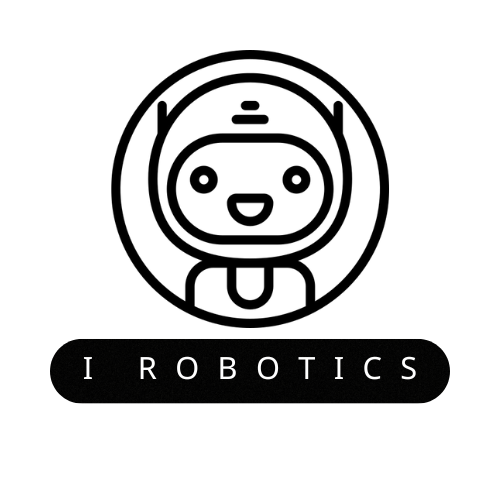

Atal Tinkering Lab
Innovation, Creativity, and Future-Ready Skills for Young Minds - Powered by I Robotics
What is an Atal Tinkering Lab?
An Atal Tinkering Lab (ATL) is an innovation space set up in schools across India, designed to foster curiosity, creativity, and imagination in young students. Established under the Atal Innovation Mission (AIM) by the NITI Aayog, ATLs provide a foundation in STEM (Science, Technology, Engineering, and Mathematics) and encourage students to engage in hands-on, practical learning experiences.
Features of an Atal Tinkering Lab
- Modern Tools & Technologies: Each lab is equipped with 3D printers, robotics kits, electronics, and other tools to encourage innovation.
- Creative Environment: Labs offer a space where students can experiment, explore, and engage in project-based learning.
- Project-Based Learning: Students are encouraged to identify problems, build solutions, and develop prototypes or models.
- Mentorship and Collaboration: ATL students can connect with mentors, experts, and peers, fostering a collaborative learning environment.
- Emerging Tech Curriculum: Curriculum topics include robotics, artificial intelligence, coding, and IoT (Internet of Things).

Facilities
Learning
Innovative :)
Project-Based
Events
Purpose and Goals of ATLs
The main goals of the ATLs are to nurture innovation and creativity, inspire entrepreneurship, and equip students with future-ready skills in STEM fields. By encouraging students to work on real-world problems and solutions, ATLs foster a culture of "learning by doing" and prepare students for future challenges in an evolving technological landscape.
Impact of ATLs
ATLs have positively impacted thousands of students across India, especially in underserved areas, providing access to advanced tools and learning resources. Many students have successfully developed prototypes addressing various social and environmental issues, promoting a culture of innovation and bridging the digital gap.
Why Choose I Robotics?
- Hands-On Learning: I Robotics offers an interactive, experiential learning approach that enhances critical thinking and problem-solving skills.
- Expert Guidance: Students benefit from mentorship by I Robotics professionals, providing real-world insights and support in STEM fields.
- Future-Ready Skills: Our curriculum is designed to equip students with relevant skills for tomorrow’s technology-driven world.
- Collaborative Environment: ATLs powered by I Robotics foster a spirit of teamwork and community learning among students and mentors.
- Real-World Impact: With I Robotics, students learn to tackle real-world challenges, making an impact in their communities and beyond.

 I ROBOTICSS
I ROBOTICSS I ROBOTICSS
I ROBOTICSS